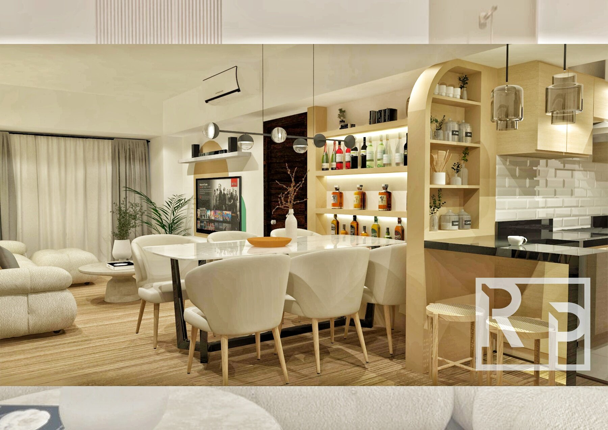
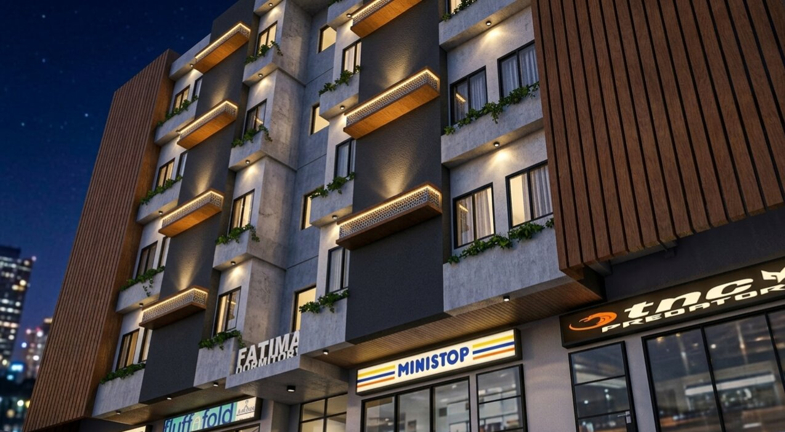
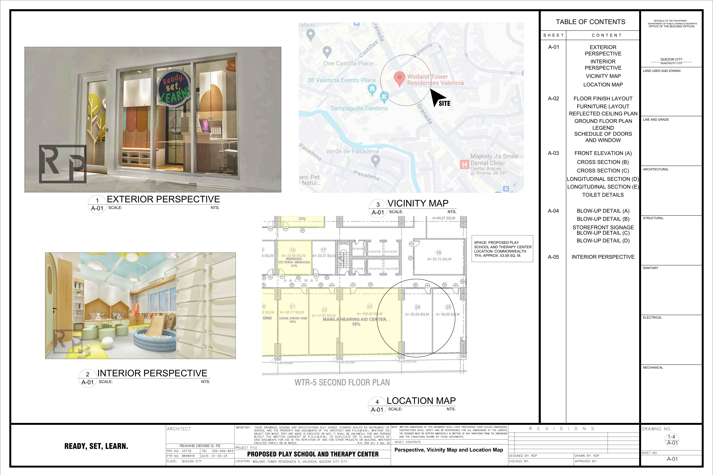
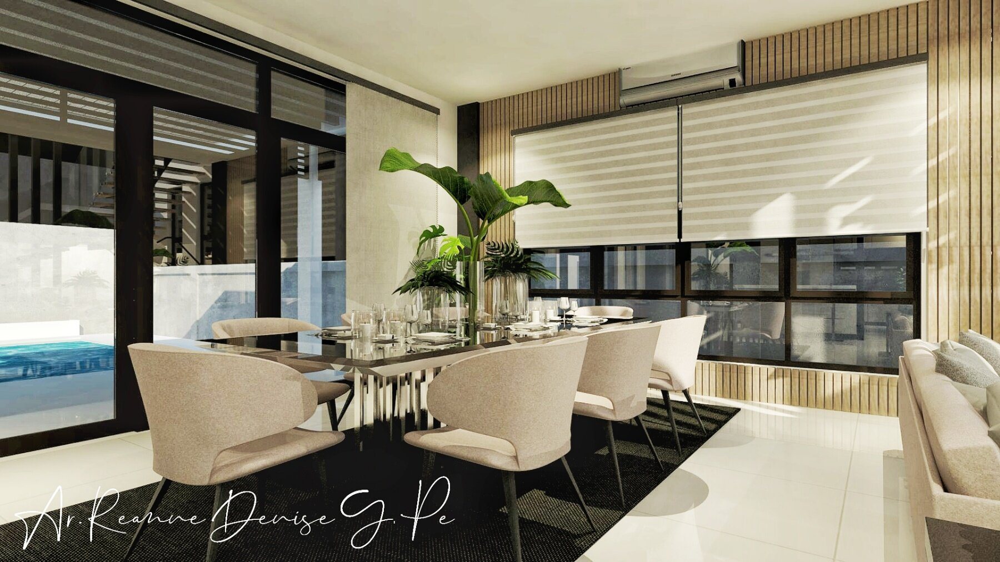
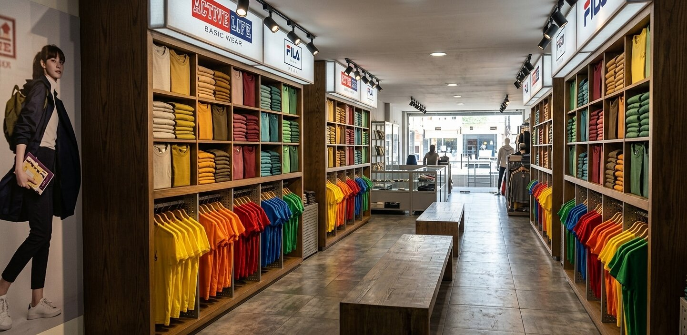
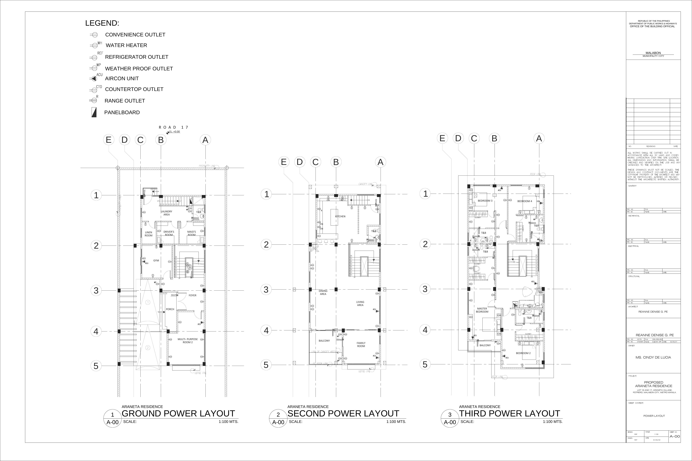

Residential interiors
Small-space planning, modular storage thinking, lighting, and finish direction grounded in buildable layouts.
Residential interiors • exterior visualization • drawing support
Reanne Denise Pe is a Philippines-licensed architect with 7+ years of experience across architectural design, interiors, visualization, and project delivery. Her work favors warm light, credible materials, and clean spatial storytelling.


Small-space planning, modular storage thinking, lighting, and finish direction grounded in buildable layouts.
Massing-aware visuals and facade perspectives that help sell the value-add story of a property.
Floor plans, presentation sheets, and production-friendly architectural documentation support.
Selected work
This selection is intentionally biased toward the kind of work most relevant to residential value-add presentations: clear layouts, believable finishes, and visuals that support decision-making.

Residential interior

Exterior visualization

Drawing preview
Case studies

01 • Urbina Residence
This condominium unit in Makati City started as a tight studio with existing dividers that made the space feel smaller and less usable. Reanne’s concept opened the unit visually while adding storage, zoning, and multi-functional furniture.

02 • One Florida Place Dormitel
The project required a multi-storey dormitel in Valenzuela City with varied room types, commercial space, parking, and a stronger market presence, all within budget and lot constraints.


03 • Ready, Set, Learn
Designed for a Quezon City playschool and therapy center, this concept had to feel playful, safe, welcoming, and budget-aware within a compact footprint.
Capabilities
Interior perspectives, exterior views, and image sets suitable for client presentations, listings, and concept reviews.
Space planning, presentation plans, and drawing clean-up that help explain how a proposal actually works.
Material, lighting, and palette decisions that keep images believable instead of glossy and over-rendered.
Comfortable working from written briefs, markups, reference boards, and staged feedback cycles.
Workflow
About
Reanne Denise Pe has worked across architectural design, interiors, 3D visualization, modular works, and project coordination since 2018. Her strongest work tends to sit at the overlap of layout logic, material judgment, and presentation clarity.
She is especially effective on constrained spaces, practical design problems, and visual packages that need to feel composed, credible, and client-ready.